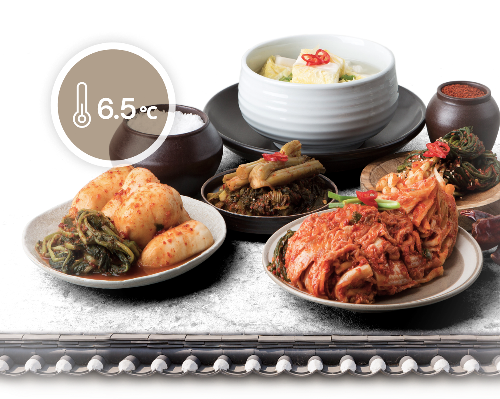
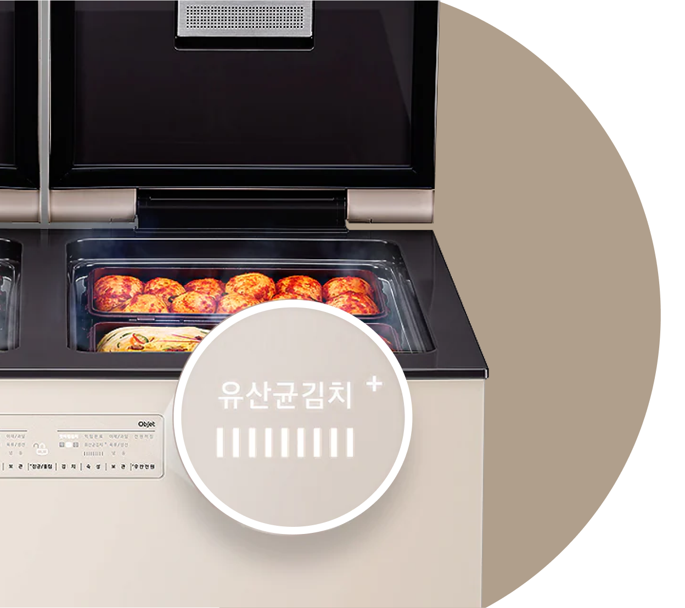

주방김치냉장고


보다 더 스마트한 일상
LG ThinQ의 시작

보다 더 스마트한 일상, LG ThinQ
씽큐는 사람과 가전을 AI 기술로 연결하여 더 편리하고 놀라운 일상을 만드는 LG전자의 스마트 홈 플랫폼입니다.
* 본 콘텐츠는 ThinQ 앱의 콘텐츠입니다.
"발효식품, 유산균, 건강" 하면 어떤 식품이 떠오르시나요?
서양에서는 요구르트와 피클, 우리나라에는 김치가 있죠. 김치는 몸에 좋은 유산균이 풍부한 발효식품으로 세계 5대 건강식품 중 하나랍니다.
유산균 김치, 한겨울 땅속 김장김치의 깊고 풍부한 맛
01
한겨울,
한겨울,
땅속에 묻은 김장독에서 꺼낸 톡 쏘는 김치 맛의 비밀!
류코노스톡은 김장김치 특유의 톡 쏘는 맛을 내는 유산균으로, 6.5℃ 부근에서 가장 자란다고 하죠.
우리나라에는 김치만을 연구하는 정부 출연연구소인 세계김치연구소의 연구 결과에 따르면, 한겨울 김장 김치 맛의 핵심 성분은 류코노스톡이라는 유산균이라고 해요.
선조들이 겨울에 김장을 하고 설날에 가장 맛있는 김치를 먹을 수 있었던 이유가 바로 한겨울 땅속의 온도가 가져다 준 류코노스톡의 숨은 공로였죠.

02
맛있는 유산균, 많이 만들려면 어떻게 해야 할까요?
맛있는 유산균, 많이 만들려면 어떻게 해야 할까요?
유산균김치+
LG 디오스 김치톡톡에는 [유산균김치+] 기능이 있죠. 6.5℃에서 류코노스톡을 극대화하고 이후 빠르게 냉각해서 깊고 풍부한 김장김치의 톡 쏘는 맛을 오랫동안 유지할 수 있게 해 줘요.
갓 담은 김치를 류코노스톡 유산균이 풍부한, 건강하고 맛있는 김치로 만들고 싶다면 [유산균김치+] 기능을 꼭 사용해 보세요.

[유산균김치+]는 선조들의 지혜를 최신 기술로 담아낸 성과라고 할 수 있어요. 언제나 아삭하고 상큼한 김치를 맛볼 수 있는 즐거움을 누려보세요.


LG ThinQ
ThinQ 하나로 더 좋아지는 일상
일상을 더 편하고 스마트하게 만들어주는 씽큐 앱을 지금 바로 만나보세요.
- #건조기
- #스타일러
- #리프레쉬
- #패딩
- #패딩리프레쉬
- #리프레쉬코스
출처 및 고지사항
*건조기 패딩 리프레쉬 코스
- 제품 기능 및 기능 명은 모델별 상이
- 인터텍 시험 결과, 자사가 제시한 기준으로 스팀옵션 적 용, 건조행정시간 / 자연건조시간 비교시 경량 덕다운 기준 패딩 볼륨감 복원력 최대 31 % 더 회복
- 실사용 환경에서는 달라질 수 있습니다.
*스타일러 패딩관리 코스
- 제품 기능 및 기능 명은 모델별 상이
- 인터텍 시험 결과, 대표적인 패딩인 구스다운에 10kg 무게로 60분 동안 압력을 가한 후 스타일러의 패딩관리 코스를 사용하고 착용할 때와 스타일러를 사용하지 않고 동일한 시간(60분) 만큼 경과한 후 착용했을 때, 스타일러의 패딩 관리 코스를 사용한 패딩의 볼륨감이 최대 29%까지 높아짐
- 실사용 환경에서는 달라질 수 있습니다.
*참고 자료
- 패딩관리도 LG 건조기•스타일러면 '걱정 끝, LiVE LG [웹사이트]. (2019년 2월 26일) >